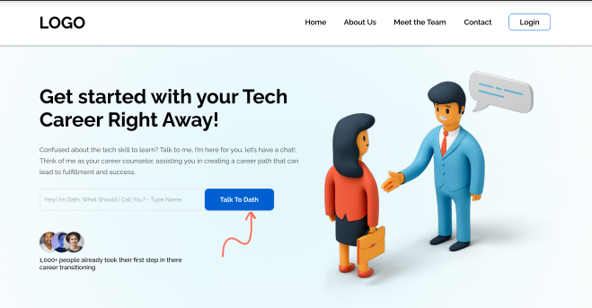
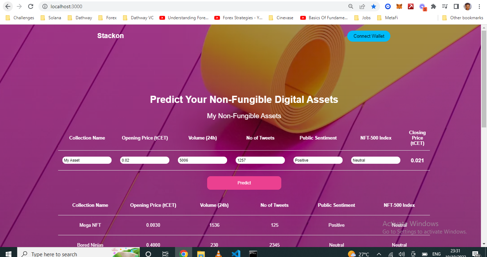
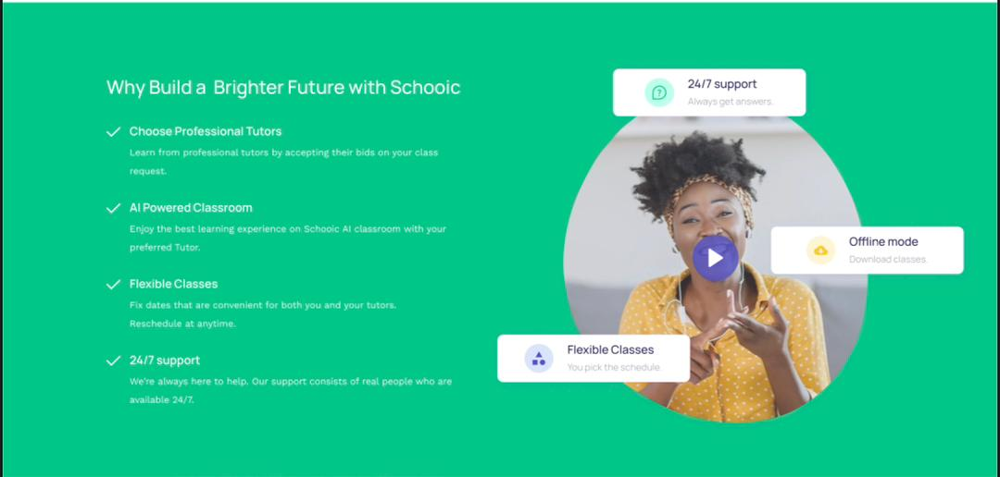
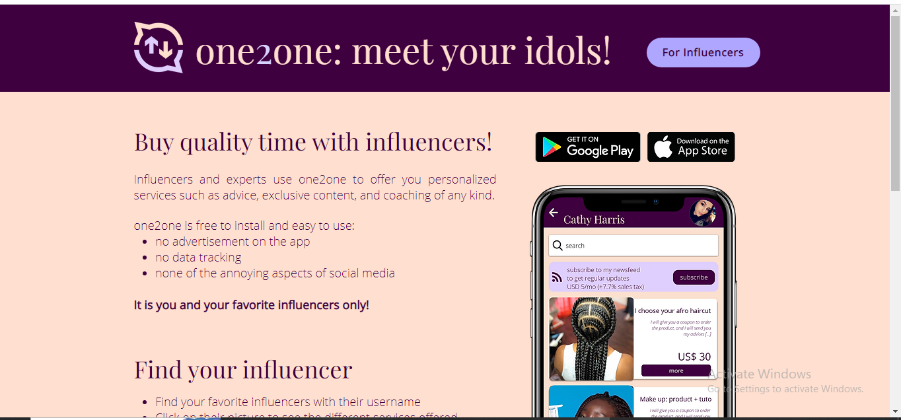

Worked with
Clients & Partners

About me
Experience
6 years WorkingCompleted
32+ ProjectsSupport
Online 24/7My Experience
DevOps Engineering
Docker
AdvancedAnsible
IntermediateJenkins/Azure DevOps
IntermediateKubernetes
AdvancedPuppet
IntermediateAWS/Azure/GCP
AdvancedSite Reliability Engineering
Chef
AdvancedPrometheus
IntermediateJMeter
AdvancedPagerDuty
IntermediateOpsGenie
IntermediateVictorOps
IntermediateArticial Intelligence
Tensorflow
AdvancedScikit-learn
IntermediateKeras
AdvancedPandas
IntermediateMatlib
IntermediatePyTorch
IntermediatePython Automation
Python
AdvancedSelenium
IntermediatePyTest
AdvancedCelery
IntermediateFabric
IntermediateBehave
IntermediateWhat I Offer
Chatbots
Agile System Engineering for Data Science
CI/CD
Pipelines
Infrastructure
Automation
Deployment
Automation
Monitoring
and Logging
Cloud
Migration
Software
Testing
Security
Recent Works
All
Contract
Personal

Dathway

Stackon

Schooic
Xposure

One2One
Achievements
Hackathon
Microsoft DevDays
Hackathon
EVM x IDEATHON
Hackathon
Near Metabuild
Awards
Hackathon
Winner
Microsoft DevDays
Hackathon
Winner
EVM x IDEATHON
Hackathon
Mention
Near Metabuild
Testimonial

Alex Azzi
A beast, technical and business wise! David understands what he is doing and he is a very intentional young man.
Yousef Rahman
Vibrant young man. Very fast and detailed with machine learing models.
Aida Nassar
I had the pleasure of working on a recent project and was blown away by their skills in Automation. They were able to create an efficient and reliable infrastructure that enabled our work scale largely and perform at its best. I would highly recommend to anyone looking for a top-notch engineer.